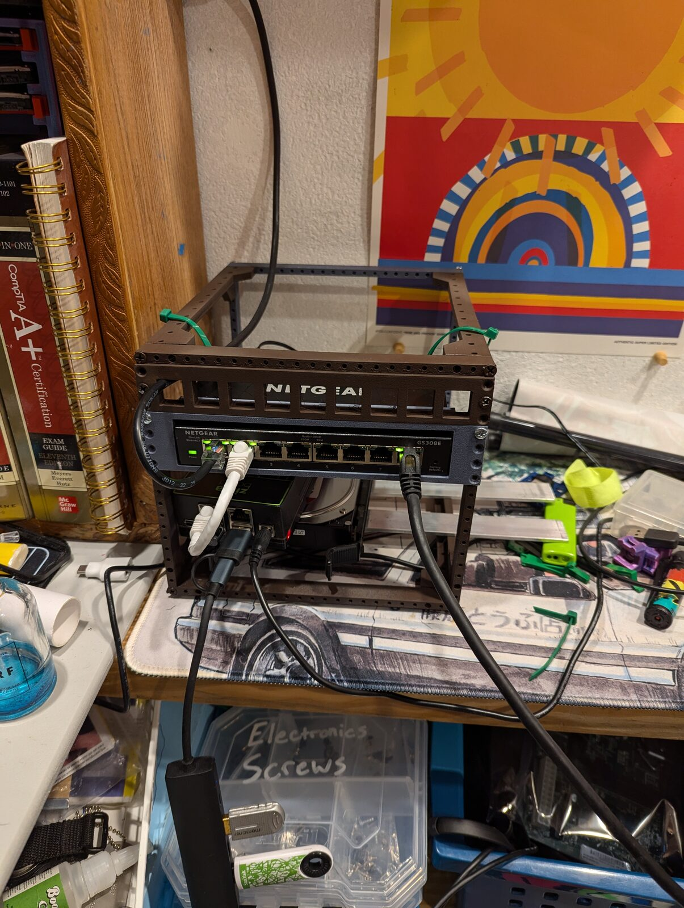
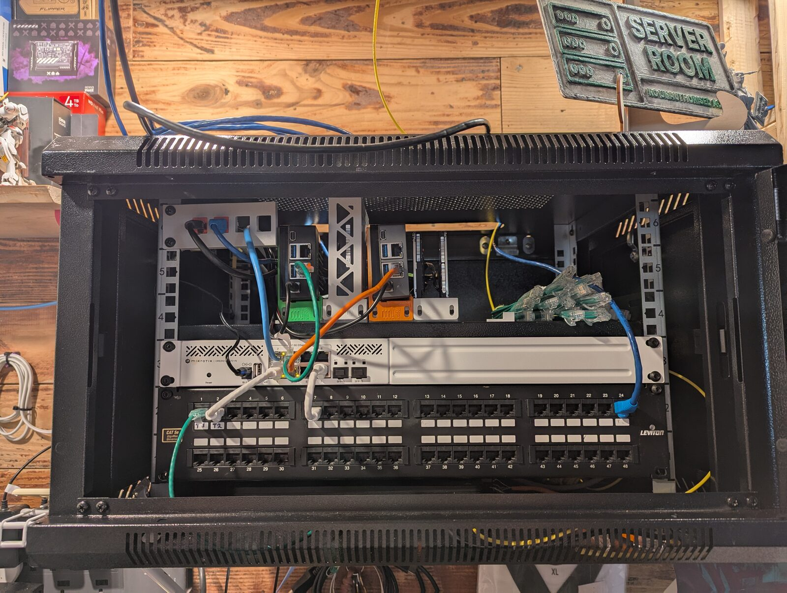
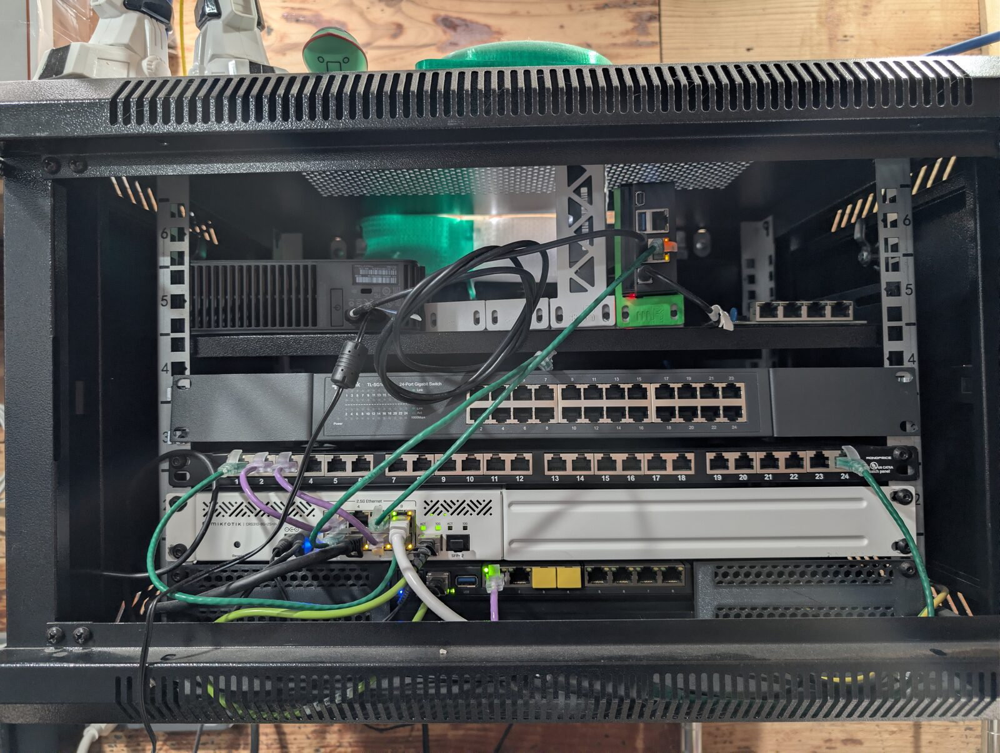
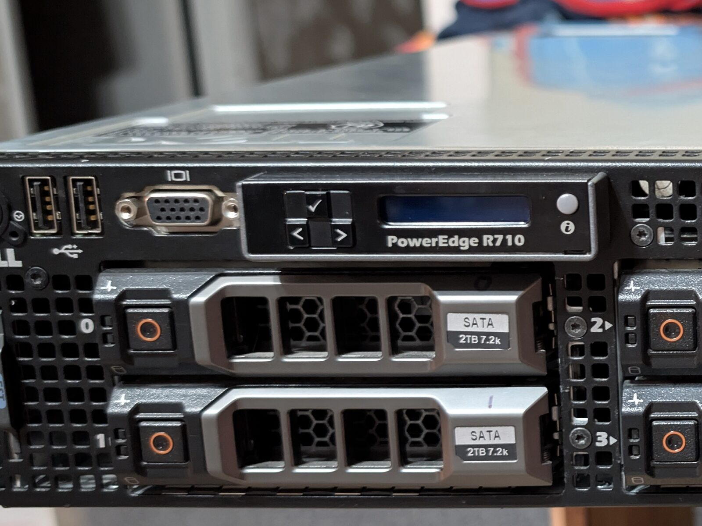

$ whoami
- A decade as a Certified Nursing Assistant on a back-and-spine surgical recovery and med-surg floor
- Made the jump to cyber in fall 2025
- Now an Instructor, Cybersecurity & Network Infrastructure at MCTC
- Runs a two-node homelab that has been broken in almost every way a homelab can be broken
- Started "talking again" to the wife about writing a book about it all
Hospital floor → security
Turns out a med-surg floor is excellent preparation for cybersecurity.
Stay calm
Something is actively going wrong. Panicking doesn't fix it.
Triage fast
What's most urgent? What can wait? Decide, then act.
Document everything
Nobody trusts your memory at 3 AM, including you.
What is a homelab?
A place you own where you're allowed to break things.
- Hardware, VMs, or containers you control end to end
- Could be one old laptop, a mini PC, or a full rack
- Production-like enough to learn from, low-stakes enough to wreck
Why every security person needs one
Learn by breaking
Attack, defend, misconfigure, recover. Theory sticks when you've seen it fail.
Skills beyond certs
Networking, Linux, AD, logging: the stuff every security job assumes you know.
Proof of work
"I built a detection lab and here's my write-up" beats a bullet point on a CV.
Safe sandbox
Test exploits, tooling, and malware somewhere that isn't your employer's network.
Told to "just get certified"? Certs prove you studied. A lab proves you can do it. This is the other half.
My journey
- ~10 yrsCNA on a surgical recovery and med-surg floor
- 2020Met my wife: "Stop talking about things and just do them." The homelab starts
- 2022First house. Claimed a 5'×5' basement corner before the kids could, and it became the "Enterprise Network"
- Fall 2025Made the jump into cybersecurity
- TodayTeaching at MCTC, running a two-node lab, and "talking" to my wife about writing a book
Then → now

📷 photos/then.jpg
📷 photos/middle.jpg
📷 photos/now.jpgThe basement "enterprise"
25 square feet, claimed in 2022 before the kids could.
Compute
Two-node Proxmox VE cluster: NovaCore (Dell R720) and GladOS (Dell R520), plus two ZimaBoards for always-on services
Network
MikroTik RB5009 router, CRS310 10G switch, hAP ax3 Wi-Fi 6. Seven VLANs: Trusted, IoT, Guest, Servers, Kids, Lab, Mgmt
Storage
7.28 TiB hardware RAID5 on a Dell PERC 6/i, shared out as Proxmox storage
Running
Wazuh SIEM, pfSense lab firewall, NetBox, Jellyfin behind Caddy, a Meshtastic mesh, game servers. Remote access over a NetBird mesh
Meet the hardware

📷 photos/node1.jpg 📷 photos/node2.jpg
📷 photos/node2.jpg
 📷 photos/network.jpg
📷 photos/network.jpg
You don't need a rack
£$€ 0
VirtualBox or Hyper-V on the PC you already own. An old laptop is a perfectly good server.
~ 100–250
A used mini PC (business desktops are cheap off-lease) or a Raspberry Pi. Quiet, low power.
Later, maybe
Used enterprise servers: lots of cores and RAM, but loud, hot, and hard on the power bill.
Start with what you have. Buy hardware when you hit a real limit.
Pick a hypervisor
- Proxmox VE: free, open source, VMs + LXC containers, the community default
- XCP-ng: open-source Xen platform, good if you want something different
- Hyper-V: built into Windows Pro; handy for AD labs
- VirtualBox / VMware Workstation: fine on a laptop to get started
- Docker: for services; complements a hypervisor rather than replacing it
ESXi licensing has changed a lot recently, so check current terms before you build on it.
Segment it like you mean it
- Put the lab on its own VLAN / subnet, away from family devices
- Run a real firewall: OPNsense or pfSense (works fine as a VM)
- Default-deny between segments, then allow what you need
- Don't port-forward lab services. Get in remotely with WireGuard or Tailscale
- Give attack and malware labs a network with no route out
Labs worth building
Active Directory
Build a domain, then attack it. GOAD (Game of Active Directory) automates a vulnerable forest.
Detection / SIEM
Wazuh, Security Onion, or the Elastic stack. Attack your own boxes and see what it catches.
Vulnerable targets
Metasploitable, DVWA, and VulnHub images for practising offence locally.
Malware analysis
FLARE-VM + REMnux on an isolated network. Snapshot first, every time.
Self-hosting that teaches
- DNS: Pi-hole or AdGuard Home, so you finally understand DNS
- Reverse proxy + TLS: Caddy, Traefik, or nginx with your own internal CA
- Monitoring: Prometheus + Grafana, Uptime Kuma
- Identity: SSO with Authentik or Keycloak
- Backups: Proxmox Backup Server, restic. Test your restores!
The 2 AM disasters
Bedtime didn't work
The Kids VLAN cut off at 7 PM, but the kids were still online. Hardware FastTrack meant connections opened before the cutoff were never re-checked. Fix: exclude that VLAN from FastTrack.
The bug from day one
One typo: 192.168.0.0/8. The router quietly turned it into 192.0.0.0/8. I'd looked right at it once and called it fine. A full config audit finally caught it.
"Incorrect password" everywhere
New devices couldn't join any Wi-Fi. Root cause: me. I'd changed the guest passphrase live and never wrote it down, and the MAC allowlist was rejecting phones' new private addresses.
The scene of the crime
 📷 photos/disaster.jpg
📷 photos/disaster.jpg
"I fixed this at midnight" → hired
- Write it down while it's happening: symptoms, what you tried, timestamps
- Find the root cause, not just the fix
- Change something so it can't happen the same way again
- Turn it into one line: action verb + what you did + measurable result
Template: "Diagnosed and restored [service] after [failure]; prevented recurrence by [change]."
Real example: "Audited live router, switch and AP configs against version-controlled baselines; found and fixed five latent issues, including a firewall mask error present since deployment and an orphaned VPN endpoint with a plaintext credential."
Lessons learned the hard way
- Your notes drift from reality. Audit the live config against them, regularly
- An old, forgotten rule can silently override the new one you just wrote
- Use Safe Mode (or a rollback timer) for remote firewall changes
- Document everything. Future you has no idea what past you did
- Snapshot before every change
- 3-2-1 backups: 3 copies, 2 media, 1 off-site
- Watch the power bill. That free server isn't free
Don't become the incident
- Your lab is intentionally vulnerable, so keep it contained
- No default creds, no lab passwords reused anywhere real
- Patch the infrastructure (hypervisor, firewall) even if the targets stay vulnerable
- Only attack what you own or have written permission to test
- Don't put work data in your homelab
Start this weekend
- Install VirtualBox or Proxmox on whatever hardware you have
- Build one Linux VM and one Windows VM
- Put a firewall VM in front of them on an isolated network
- Break something on purpose. Fix it. Write it up
- Repeat, adding one new thing each time
Resources
Community & practice
If it's not Broken, you are still in your safety-zone!
Thanks! Questions?
TODO: generate qr.png (see README)
kevinsays.github.io/homelab-talk
Zan · Instructor, MCTC
The book: currently in the "talking about it" phase.
- LinkedIn: linkedin.com/in/zan-dick-245038121
- GitHub: github.com/kevinsays
Slides and every link are on this page.